El Medio Interestelar
Qué hay entre las estrellas: gas y polvo. Cómo se observa lo invisible mediante radioastronomía, la línea de 21 cm del hidrógeno neutro, el gas ionizado que brilla en rojo y el polvo que nos tapa la vista.
El medio interestelar es todo el material que hay entre las estrellas. Las estrellas viven principalmente dentro de galaxias porque solo ahí se dan las condiciones —gas, y gas denso— para que se formen. Ese material no llena el espacio de forma uniforme: es una especie de atmósfera ligada gravitacionalmente a la galaxia, que la permea por completo. Su densidad es tan baja que, para estándares terrestres, parecería que el espacio está vacío. No lo está: está lleno de gas y de polvo. El problema central de esta clase es que ese material es casi invisible en luz óptica, y hubo que inventar nuevas formas de “verlo”.
¿Qué es el medio interestelar?
Una atmósfera galáctica de densidad ridículamente baja.
Las estrellas no flotan en el vacío absoluto. Entre ellas hay materia, y a ese material lo llamamos medio interestelar (ISM, por Interstellar Medium). Conviene pensarlo como una atmósfera, pero con dos diferencias respecto a la atmósfera terrestre:
- La atmósfera de la Tierra envuelve una esfera y queda “por fuera” de la superficie. El medio interestelar, en cambio, permea toda la galaxia: está repartido por todo el volumen del disco.
- Su densidad es tan baja que ningún vacío de laboratorio terrestre se le acerca. Para nosotros “parece” vacío, pero no lo está.
Puede haber estrellas fuera de las galaxias, pero son excepciones: estrellas que adquirieron velocidades muy altas y escaparon. La norma es que las estrellas se forman y viven dentro de las galaxias, porque ahí está el gas denso que permite su formación.
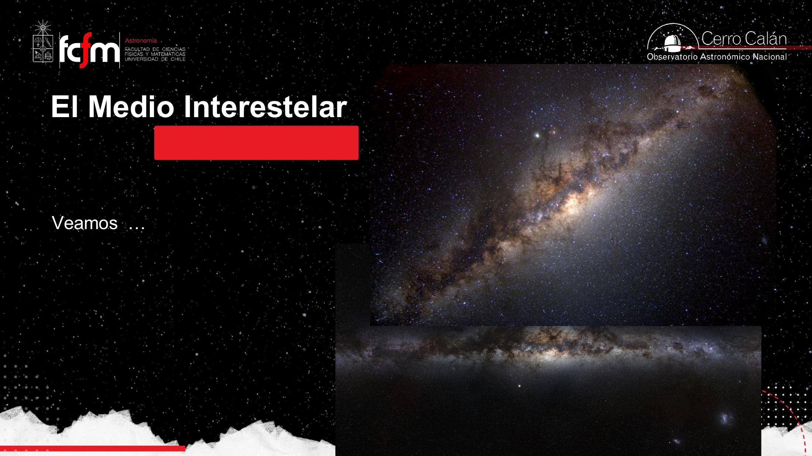
Cuando una imagen óptica parece “nubosidad gaseosa”, casi siempre son estrellas demasiado lejanas para resolverlas una por una. Lo que sí delata al medio interestelar son las regiones oscuras: ahí hay polvo que bloquea la luz de fondo, igual que el smog de Santiago tapa la vista de la cordillera. El polvo es material particulado con casi el mismo efecto que un mal día de contaminación.
Una imagen óptica de la galaxia es como un dataset con un sesgo de selección fuerte: el canal de medición (el óptico) solo es sensible a una población (las estrellas) y es casi ciego a otra (el gas frío). Conclusiones sacadas de ese único canal estarán sesgadas. La solución no es “mejor resolución”, sino cambiar de canal (de banda del espectro), como veremos con la radioastronomía.
Composición: gas, metales y polvo
Tres cuartos de hidrógeno, un cuarto de helio, y trazas que lo cambian todo.
El medio interestelar es principalmente gas. Pero “gas” en astronomía no es el gas de cocina: nos referimos sobre todo a hidrógeno y helio. El universo nació con esa mezcla, en una proporción aproximada de 3/4 de hidrógeno y 1/4 de helio (≈ 75% / 25% en masa), y eso sigue dominando hoy.
Los “metales” de los astrónomos
Ese gas tiene trazas de otros elementos químicos formados en el interior de las estrellas. Las estrellas hacen lo que soñaban los alquimistas: transforman hidrógeno en helio durante casi toda su vida, y al final el helio en carbono y elementos más pesados, hasta el hierro. Los elementos más pesados que el hierro requieren explosiones (supernovas, o kilonovas por fusión de estrellas de neutrones, donde se forman oro y platino).
Para los astrónomos, todo lo más pesado que el helio es “metal”. No por flojera: tiene que ver con la nucleosíntesis (cómo se forma el oxígeno se parece a cómo se forma el silicio o el hierro). Así que oxígeno, carbono, nitrógeno… para un astrónomo son “metales”. Hay que sacarse de la cabeza el hierro y el acero.
Hoy, tras casi 14 mil millones de años, el balance de masa del gas es aproximadamente:
- ≈ 98%: hidrógeno + helio.
- ≈ 2%: metales (todo lo demás).
- De ese 2%, alrededor de la mitad (≈ 1%) ha condensado en partículas sólidas que llamamos polvo.
Hay variedad: galaxias más pobres o más ricas en metales, pero el promedio ronda el 2%. El medio interestelar se va “contaminando” lentamente de metales a lo largo de la vida del universo.
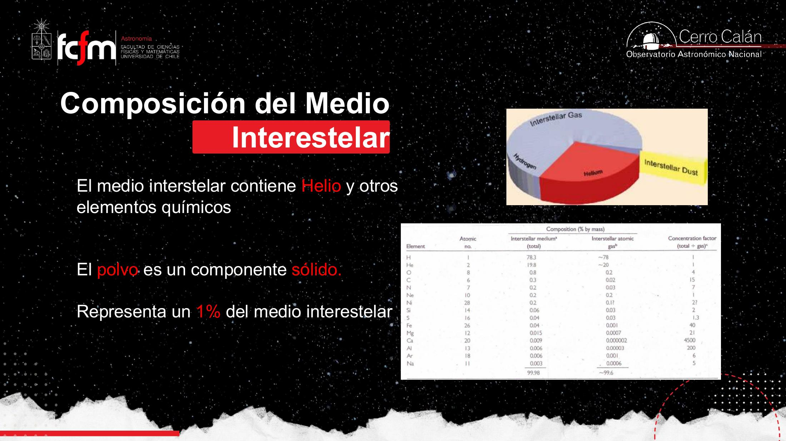
La luz como onda: el espectro electromagnético
El óptico es solo una ventanita estrecha de un rango inmenso.
Estamos acostumbrados a interpretar “luz” como el rango visible. Pero las ondas de radio también son luz. Fue Maxwell (hacia 1860) quien desarrolló el electromagnetismo y mostró que la luz es la propagación de ondas electromagnéticas: campo eléctrico y campo magnético oscilando juntos. Más tarde Planck y Einstein mostraron que la luz también es partícula (el fotón), abriendo la mecánica cuántica.
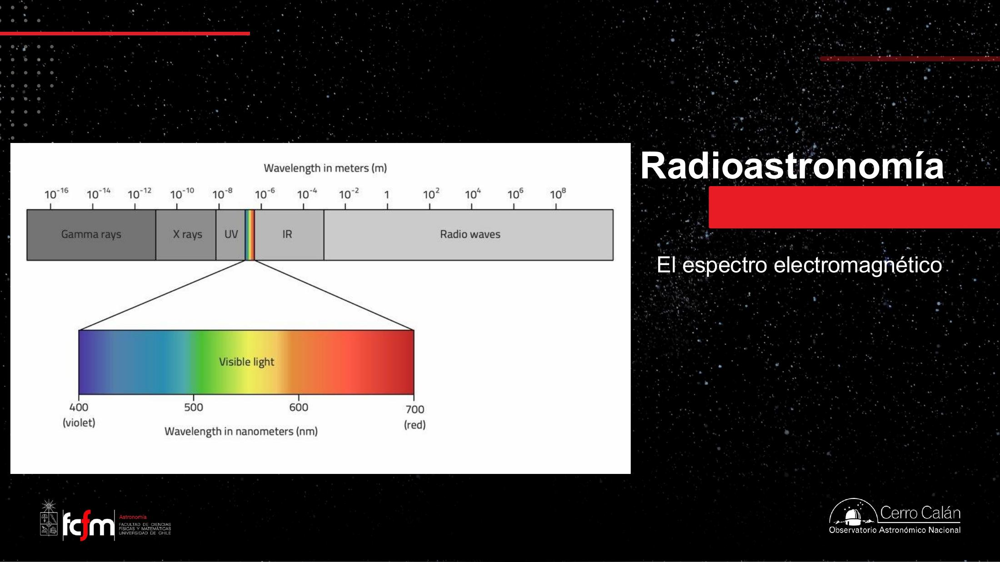
Las dos ecuaciones que organizan todo
Una onda electromagnética se caracteriza por su longitud de onda o, equivalentemente, por su frecuencia . Maxwell mostró que su producto es siempre la velocidad de la luz:
Y la energía que lleva un fotón es proporcional a su frecuencia (constante de Planck ):
Caracterizar la luz en o en es como elegir entre dos representaciones de la misma señal (tiempo vs. frecuencia). Hay un cambio de variable biyectivo entre ambas, y el rango cubre órdenes de magnitud enormes ⇒ se piensa naturalmente en escala logarítmica, como en un diagrama de Bode.
Radioastronomía: ver lo invisible
El gas es transparente en el óptico, pero brilla en radio.
La mayor parte de la energía que las galaxias emiten hoy proviene de sus estrellas, y eso ocurre sobre todo en el óptico. No es casualidad que nuestros ojos —y los de la mayoría de los animales— hayan evolucionado para ver en el óptico: es donde el Sol emite el grueso de su energía (del orden del 90%), y donde la atmósfera terrestre es transparente.
El gas de hidrógeno y helio, en cambio, es como el aire: transparente en el óptico. Por más telescopio y cámara que usemos, no veremos el gas, igual que no se fotografía el aire limpio. Pero el gas sí emite en ondas de radio. Por eso, para estudiar el medio interestelar, hubo que desarrollar la radioastronomía.
Una cámara óptica detecta fotones porque cada fotón arranca un electrón del material (efecto fotoeléctrico) y se cuenta ese electrón. Si el fotón no tiene energía suficiente (infrarrojo o radio), no arranca electrones y el detector “no se entera”. La radio usa otra tecnología: capta los cambios de campo eléctrico y magnético de la onda. Distinta energía de fotón ⇒ distinto mecanismo de detección. Es la misma luz, medida con instrumentos físicamente diferentes.
Un poco de historia
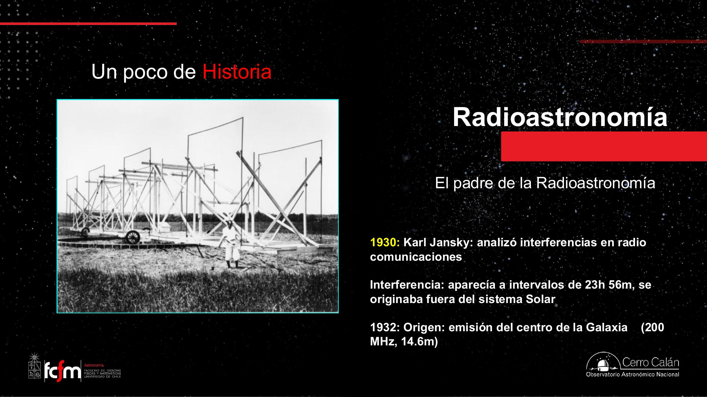
El día solar dura 24 h, pero respecto a las estrellas la Tierra completa un giro en unos 4 minutos menos (porque además avanza en su órbita alrededor del Sol). Ese periodo de ≈ 23 h 56 min es el día sidéreo. Que la señal de Jansky lo siguiera fue la pista de que venía del cielo profundo.
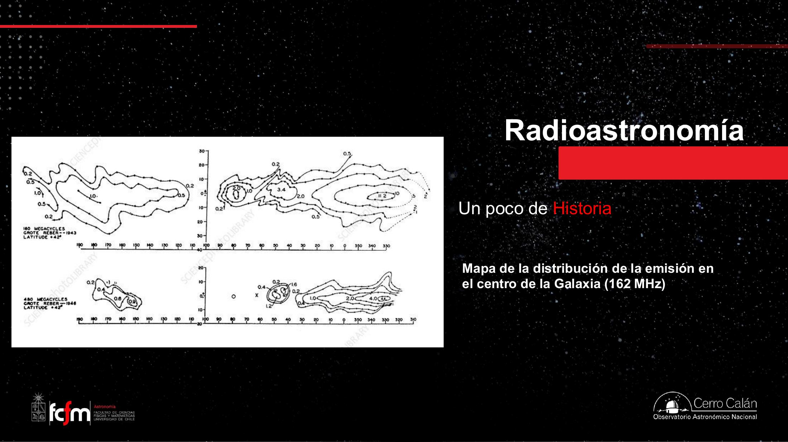
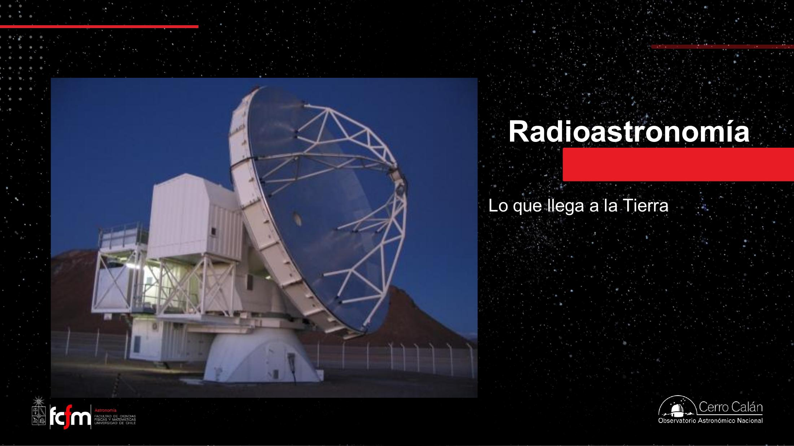
Un radiotelescopio no entrega una foto: entrega una señal de intensidad por posición en el cielo. Construir una “imagen” a partir de eso es un problema de reconstrucción (interferometría, transformadas, deconvolución). “Cómo se vería esto en radio si tuviéramos ojos de radio” es siempre una extrapolación, no un dato directo.
Gas atómico neutro (HI): la línea de 21 cm
La transición más improbable y más útil de la astronomía.
La mayor parte del gas del medio interestelar es hidrógeno neutro: un protón con su electrón. Notación astronómica (que disgusta a los químicos):
- HI (hidrógeno “uno”, con número romano) = hidrógeno neutro.
- HII (hidrógeno “dos”) = hidrógeno ionizado (perdió su electrón, queda el protón solo).
El problema: el hidrógeno atómico neutro es casi invisible. No emite prácticamente nada… salvo por una particularidad cuántica.
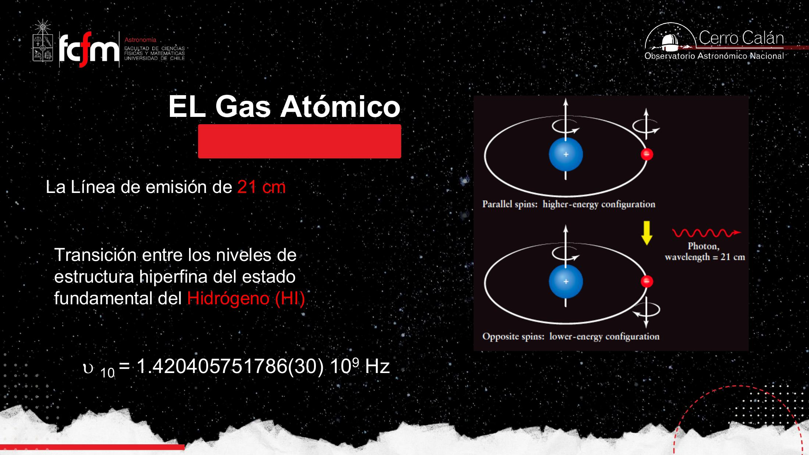
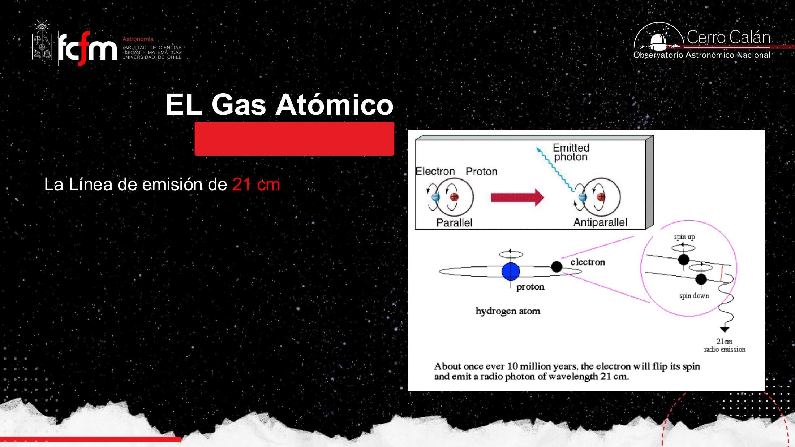
No hay nada mágico en 21 cm: es simplemente la longitud de onda que corresponde a esa diferencia de energía hiperfina. Podría haber sido 42 u 85 cm; salió 21. La línea fue predicha teóricamente y detectada por primera vez en 1951. Su utilidad es enorme: como no hay ninguna otra línea cerca (entre ~10 y ~50 cm), si detectas algo en ~21 cm sabes que es hidrógeno neutro.
La transición más improbable… que vemos todo el tiempo
La probabilidad de que un átomo de hidrógeno haga este spin-flip es bajísima: unas veces menor que las transiciones ópticas típicas. En promedio, un átomo dado tarda unos 11–12 millones de años en emitir su fotón de 21 cm. ¿Cómo, entonces, lo detectamos continuamente?
Porque hay muchísimo hidrógeno. Si un átomo tarda en promedio 12 millones de años, entonces con 12 millones de átomos esperaríamos ≈ 1 emisión por año; con muchos más, una emisión por milésima de segundo, etc. Hay tantos átomos en la Galaxia que siempre hay alguno haciendo el spin-flip ahora mismo. La intuición humana es mala con la estadística; aquí el promedio enorme por átomo se vuelve un flujo constante por la cantidad colosal de átomos.
Es exactamente un proceso de Poisson: cada átomo es un evento rarísimo e independiente, pero con gigantesco la tasa agregada es alta y estable. La misma matemática que modela “fallos rarísimos por servidor” en una flota enorme de servidores, o clicks raros en millones de usuarios.
Efecto Doppler y el mapa de la Galaxia
La línea no siempre aparece exactamente en 21 cm: eso es información.
Si una nube de hidrógeno no se mueve respecto a nosotros, vemos la línea exactamente en 21 cm. Pero si se aleja, la longitud de onda observada se estira (corrimiento al rojo); si se acerca, se comprime (corrimiento al azul). Es el efecto Doppler, el mismo de la sirena de una ambulancia que cambia de tono al pasar.
Hablar de “corrimiento al rojo” en una onda de radio puede sonar raro (el rojo es óptico). No significa que se vea roja: “al rojo” = la energía baja / λ aumenta (la dirección hacia donde está el rojo en el espectro), y “al azul” = la energía sube / λ disminuye. Es una convención de dirección en el espectro, no un color literal.
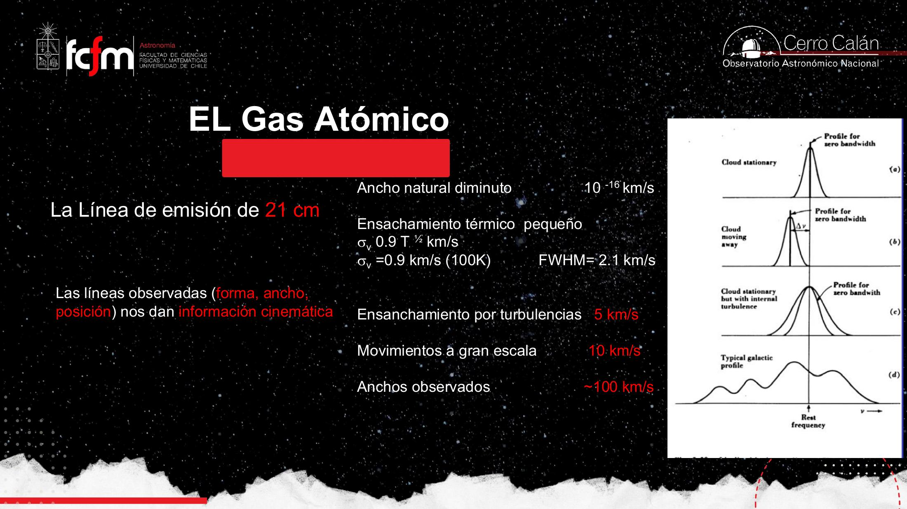
Mapear la Vía Láctea con hidrógeno
La línea de 21 cm permite dos cosas a la vez: medir cuánto hidrógeno hay (por la intensidad) y cómo se mueve (por el Doppler). Combinando ambas se reconstruye la estructura del disco galáctico, algo dificilísimo porque estamos dentro de la Galaxia y no podemos salir a fotografiarla.
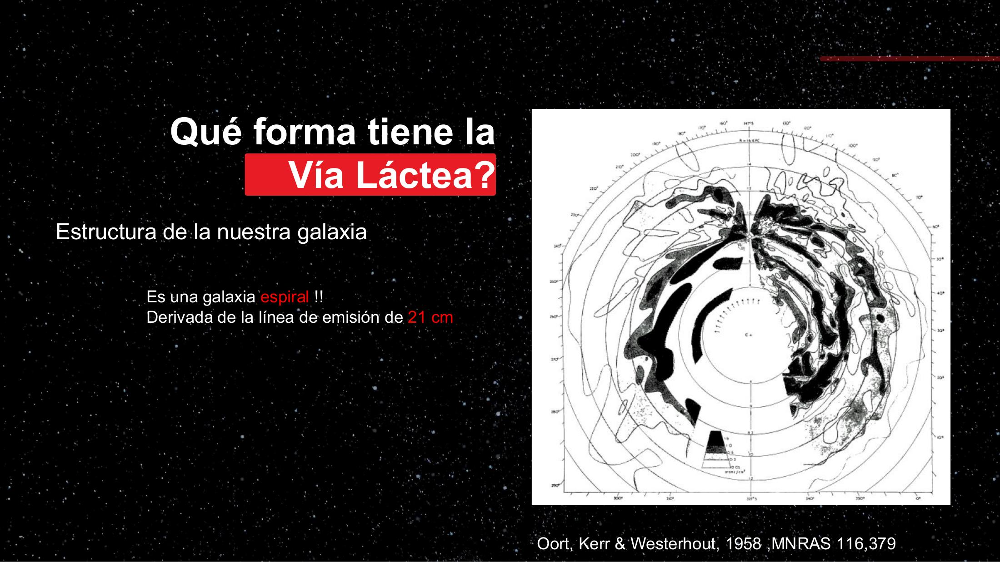
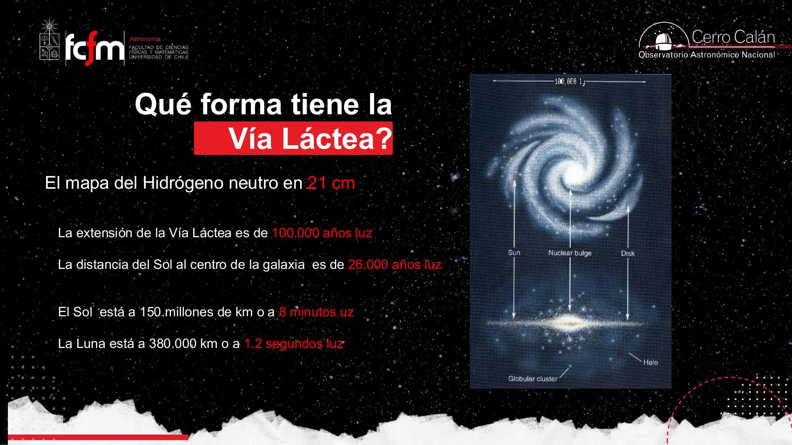
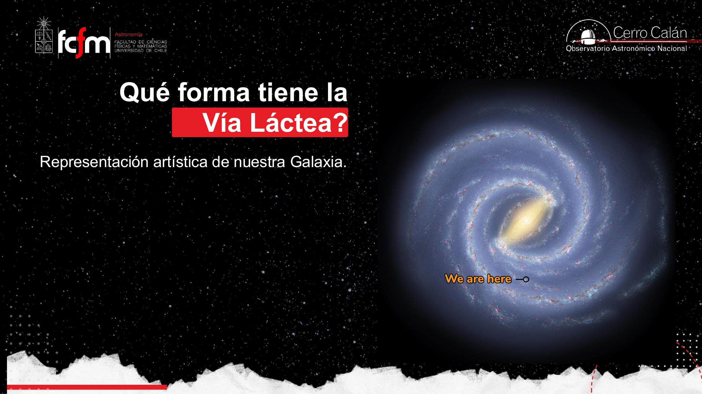
El centro galáctico (hacia Sagitario/Escorpión) se observa mucho mejor desde el hemisferio sur. Esa es una de las razones por las que se instalaron grandes observatorios en el sur a partir de los años 50: desde el norte el centro de la Galaxia queda muy bajo y poco tiempo visible.
Gas ionizado (HII) y el modelo de Bohr
Cuando el gas se calienta y los electrones se recombinan: el rojo de la formación estelar.
Cuando el gas se calienta mucho, se ioniza: los átomos de hidrógeno pierden su electrón y quedan los protones (HII). Un protón solo no emite. Pero los electrones libres quedan cerca, sienten la atracción eléctrica del núcleo y se recombinan. Al recombinarse, van cayendo por niveles de energía y emiten fotones. Uno de esos fotones cae en el óptico, en el rojo: es la radiación Hα.
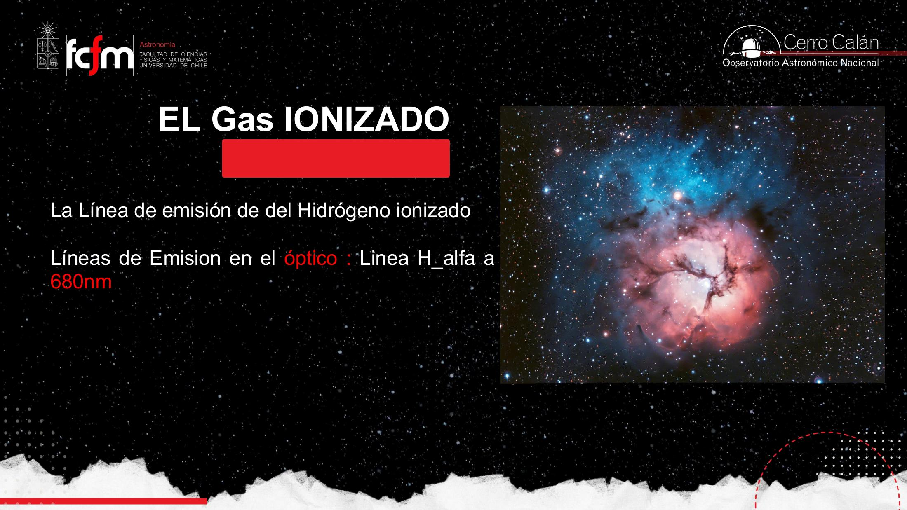
El modelo de Bohr: por qué hay líneas
Hacia 1900–1910 era un misterio por qué el hidrógeno calentado emite líneas de colores (no un arcoíris continuo), y por qué la luz continua que atraviesa hidrógeno frío muestra líneas oscuras de absorción siempre en los mismos lugares. Bohr propuso la idea clave: los electrones ligados solo pueden ocupar ciertos niveles de energía permitidos.
Los niveles de energía son como sillas en un auditorio: solo te puedes sentar donde hay silla, no “entre medio”. Para subir de nivel, el electrón debe absorber un fotón con la energía exacta del salto (ni más ni menos, como pagar un precio justo). Luego cae espontáneamente a niveles más bajos emitiendo un fotón por cada salto. Como los saltos permitidos son discretos, las energías emitidas/absorbidas son discretas ⇒ líneas, no un continuo.
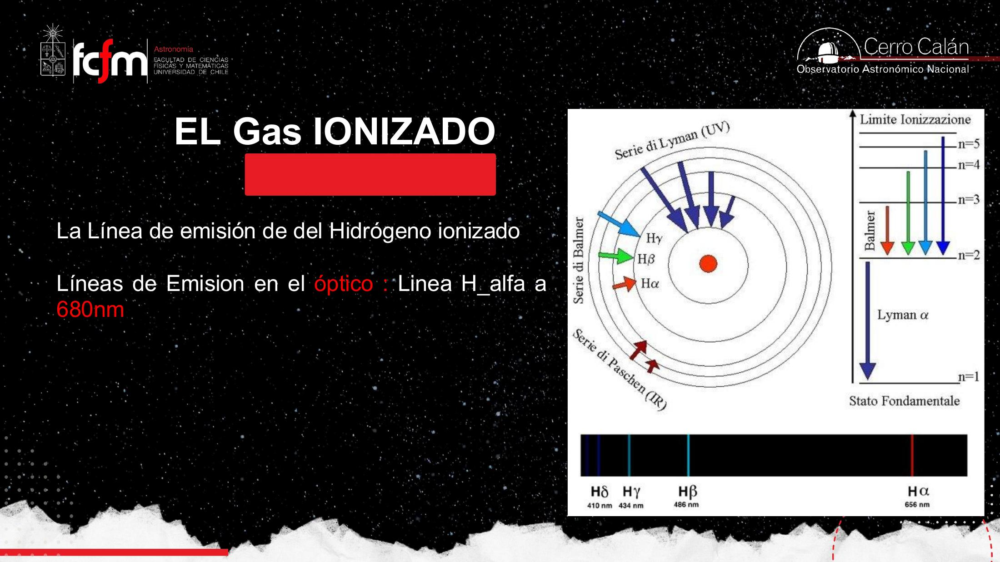
El fotón emitido es proporcional al tamaño del salto de energía. Saltos grandes (que terminan en n=1) son muy energéticos ⇒ UV (Lyman). Saltos menores (terminan en n=3) ⇒ IR (Paschen). La única transición de la serie de Balmer que cae justo en el óptico-rojo es Hα (3→2). Por eso las regiones de gas ionizado se ven rojas.
El modelo de Bohr funcionaba perfecto para el hidrógeno, pero fallaba con el helio y otros átomos; lo reemplazó la mecánica cuántica. Aun así, la idea central —niveles de energía discretos— sigue siendo válida y suficiente para entender esta clase.
Dos formas de ionizar el gas
- Fotoionización (la más común): estrellas jóvenes muy masivas, con superficies de 20.000–30.000 K, emiten mucha luz ultravioleta. Esos fotones UV arrancan los electrones del hidrógeno.
- Ionización mecánica: en gas muy caliente (~10.000 K), las partículas se mueven tan rápido que al chocar se arrancan electrones unas a otras. No se fusionan: para fusión harían falta ~15 millones de K (como en el núcleo del Sol).
Las estrellas muy masivas viven poquísimo: una de 10 M☉ vive ≈ 10 millones de años; una de 30 M☉, ≈ 2 millones (frente a los ≈ 10.000 millones del Sol). El gas ionizado no alcanza a dispersarse antes de que esas estrellas mueran, así que donde ves gas rojo (Hα), hay formación estelar en curso. Es la gran excepción a “todo lo que se ve es luz de estrellas”.
El polvo interestelar
Solo el ~1% de la masa, pero suficiente para taparnos la vista.
La otra gran componente del medio interestelar es el polvo: partículas sólidas, granos diminutos. Vive normalmente en nubes frías (~100–200 K) y, aunque es solo ≈ 1% de la masa, basta para absorber luz óptica y crear las nebulosas oscuras.
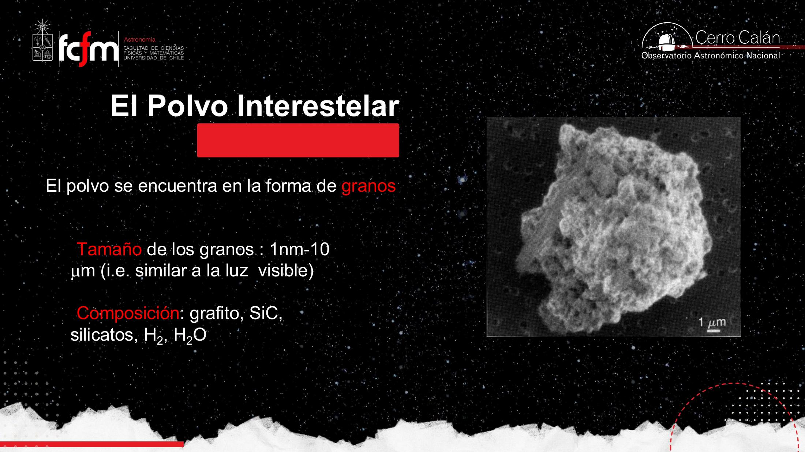
Extinción y enrojecimiento
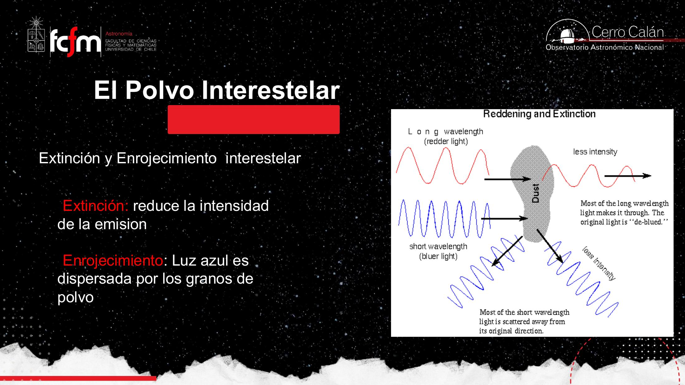
El enrojecimiento es un filtro dependiente de la frecuencia: atenúa más las componentes de alta frecuencia (azul) que las de baja (rojo). Es un sesgo sistemático del canal de medición; corregir por extinción es “des-filtrar” la señal antes de interpretarla, igual que se compensa la respuesta no plana de un sensor.
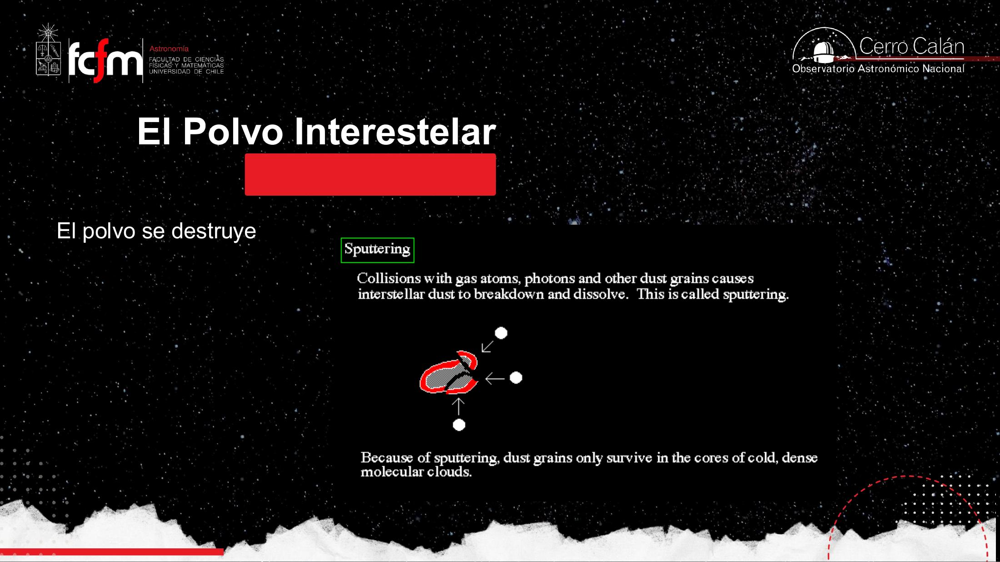
El polvo bloquea el óptico, así que no podemos ver qué ocurre dentro de las nubes oscuras (justo donde nacen las estrellas). La solución es observar en radio/infrarrojo, que atraviesan el polvo. Por eso se construyen radiotelescopios como ALMA: para ver la formación estelar escondida tras el polvo.
Quedaron diapositivas pendientes sobre el gas molecular (H₂, y trazadores como el CO; se han descubierto cientos de moléculas en el espacio, hasta etanol). El gas necesita enfriarse mucho para volverse molecular. Se retoma en la siguiente clase del módulo.
Conceptos clave
Tabla de repaso rápido.
| Concepto | Qué es / valor | Por qué importa |
|---|---|---|
| Medio interestelar (ISM) | Gas + polvo entre las estrellas | Materia prima de las estrellas; casi invisible en óptico |
| Composición del gas | ≈ 75% H, ≈ 25% He; ≈ 2% metales | Define la química; los metales se forman en estrellas |
| “Metales” | Todo lo más pesado que el He | Nomenclatura astronómica (no es hierro/acero) |
| λ · ν = c | m/s | λ y ν son la misma información |
| E = h·ν | J·s | Más frecuencia ⇒ más energía del fotón |
| Línea de 21 cm | Spin-flip del HI; ≈ 1,4 GHz | Permite ver y mapear el hidrógeno neutro |
| τ del spin-flip | ≈ 11–12 millones de años por átomo | Rarísima, pero el flujo es constante por la cantidad de átomos |
| Efecto Doppler | Da la velocidad del gas ⇒ rotación galáctica | |
| HI / HII | Hidrógeno neutro / ionizado | HII recombinándose emite Hα (rojo) |
| Hα (Balmer 3→2) | ≈ 656 nm (óptico, rojo) | Traza regiones de formación estelar |
| Modelo de Bohr | Niveles de energía discretos | Explica las líneas de emisión/absorción |
| Polvo | Granos sólidos 1 nm–10 µm; ≈ 1% masa | Extinción y enrojecimiento; oculta el óptico |
| Escalas de la Galaxia | ⌀ ≈ 100.000 ly; Sol a 26.000 ly del centro | Derivadas del mapeo en 21 cm |
Exámenes de práctica
10 exámenes de 5 preguntas (3 de alternativas autocorregibles + 2 de respuesta escrita).